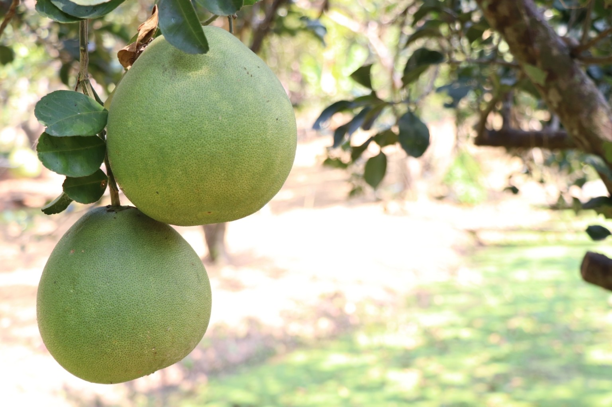

🍈 ผลผลิตจากสวน
คัดสรรผลผลิตและของดีจากสวนกำนันหน่อย

🍈 ส้มโอขาวใหญ่
ผลไม้ขึ้นชื่อของพื้นที่ เนื้อฉ่ำ รสชาติดี เหมาะสำหรับรับประทานและเป็นของฝาก
สอบถามราคาและรอบผลผลิต

🍈 ส้มโอจากสวน
ผลผลิตจากสวนที่ดูแลตามฤดูกาล พร้อมคัดเลือกก่อนส่งมอบให้ลูกค้า
สั่งซื้อได้ตามฤดูกาล

🥨 ของกินจากชุมชน
อาหารและขนมพื้นถิ่น รวมถึงผลิตภัณฑ์จากภูมิปัญญาของคนในชุมชน
สอบถามรายการสินค้า